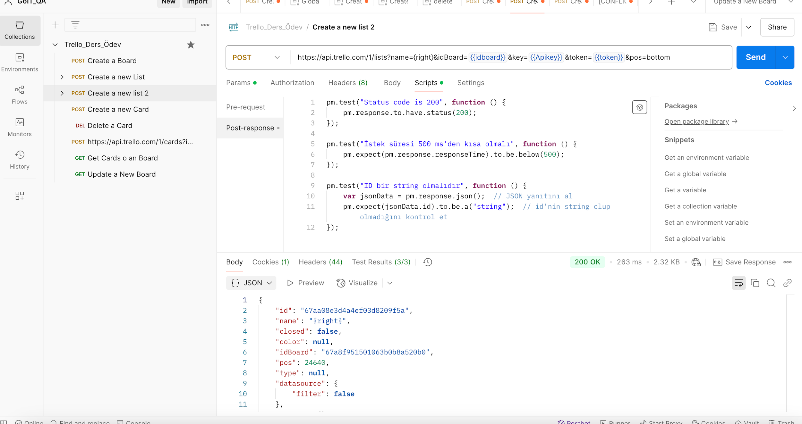

Task 03
Create the right list on board
Create the Right list at bottom position using the pos=bottom parameter.
Request Details
Test Script
pm.test("Status code is 200", function () {
pm.response.to.have.status(200);
});
pm.test("Response time should be below 500 ms", function () {
pm.expect(pm.response.responseTime).to.be.below(500);
});
pm.test("name should be a string", function () {
var jsonData = pm.response.json();
pm.expect(jsonData.name).to.be.a("string");
});Response Evidence
